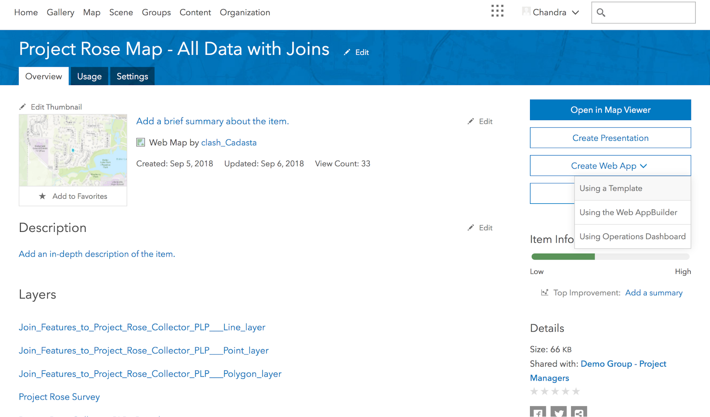
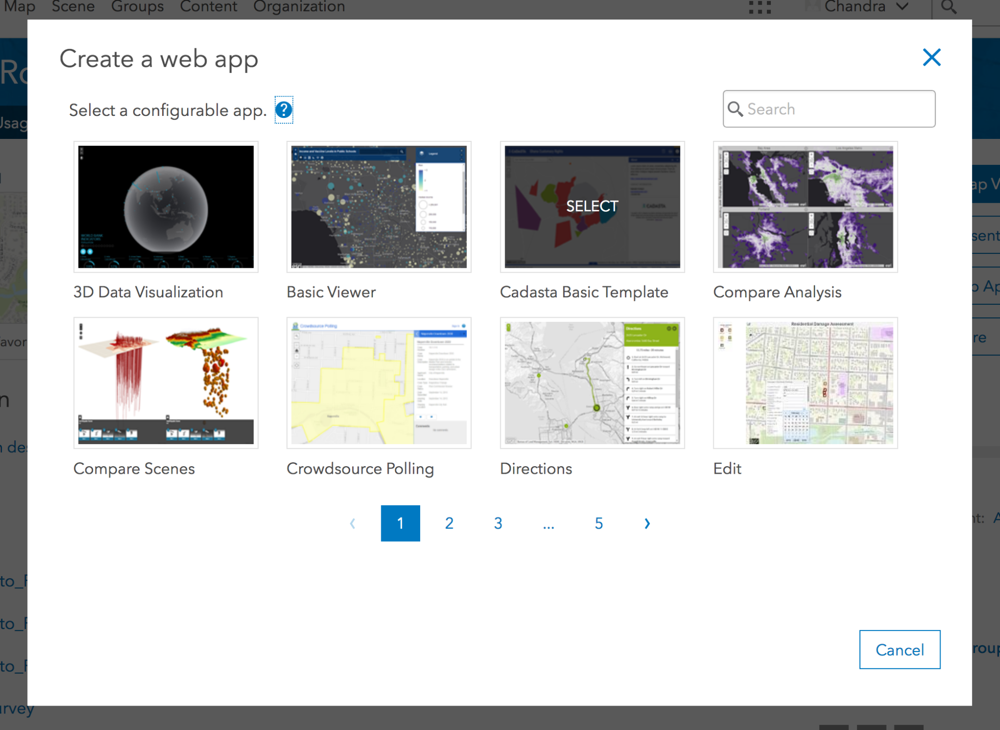
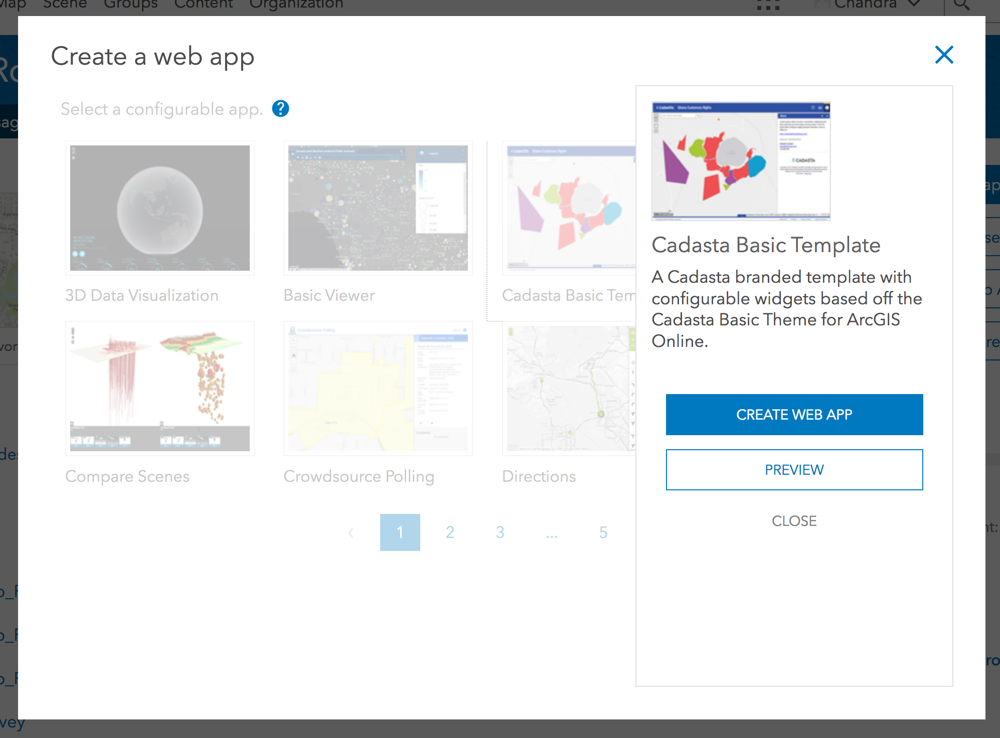
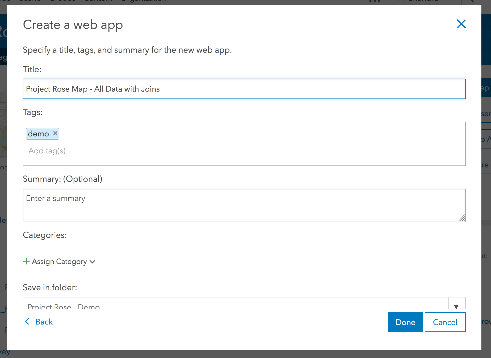
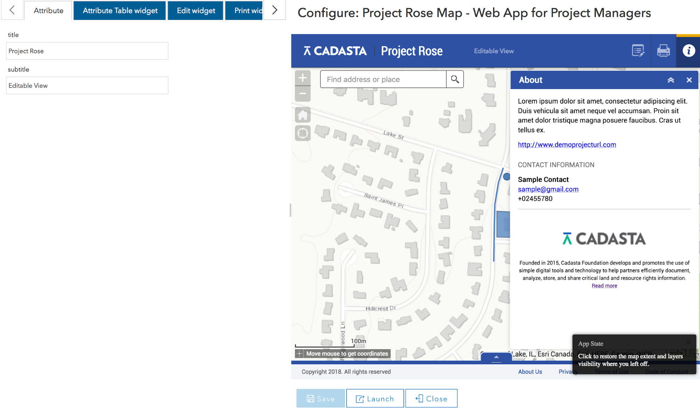
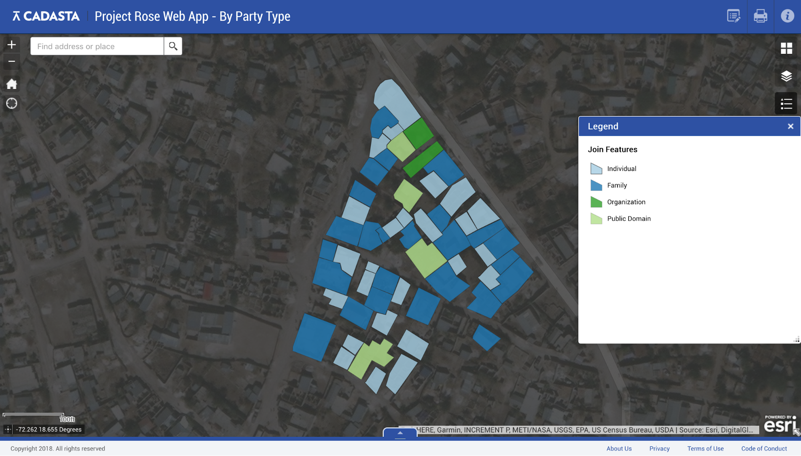
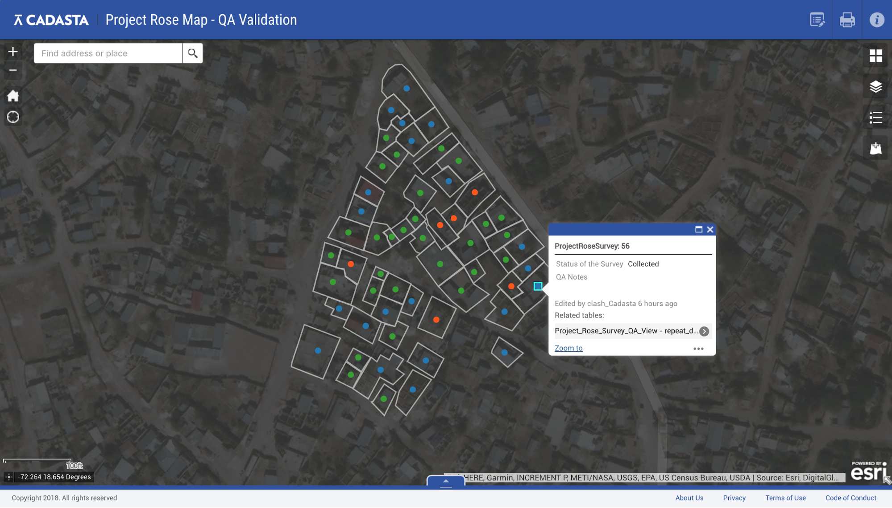
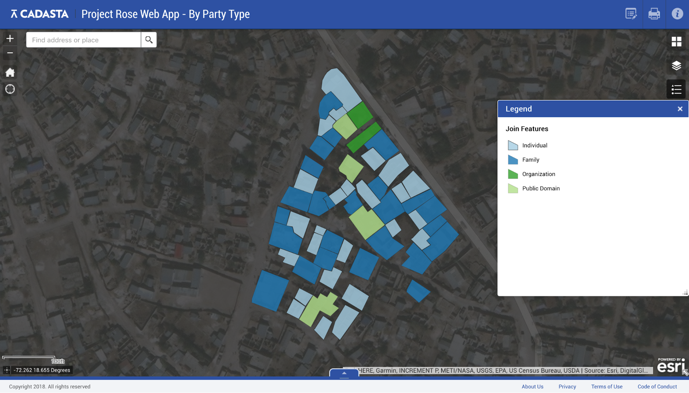
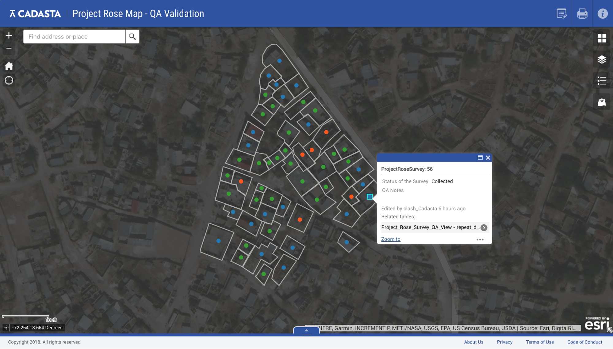

Purpose
These steps will explain how to create a Web App in ArcGIS Online (AGOL).
Requirements
- You will need to have an account on the Cadasta AGOL platform.
- You will need to create a web map with all of the relevant data layers (see Creating an Online Map for instructions on how to do this)
Steps
- Log into AGOL and find the web map you have prepared.
On the right side of the window, select Create Web App > Using a Template.

Select the Cadasta Basic Template.

Select Create Web App.

Complete the input for title, tags, summary, etc. and select Done.

Customize the editable parameters in the template. Select Save when complete.

Select Launch to view the completed Web App. Make adjustments by visiting the details page and selecting Configure App. For the demo projects, we are using Project Rose Web App - All Data, Project Rose Web App - By Party Type, Project Rose Web App - QA Validation.
 


Note: If you want to create additional web apps for other audiences (to limit viewable data, etc.), you need to create an additional web maps and then repeat this step.